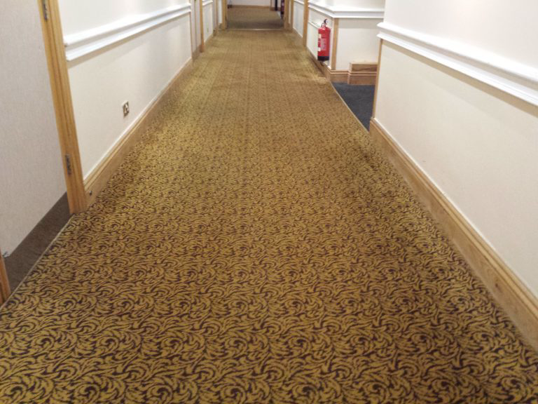

A-099
Class: Keter
Risk: Significans
Description
A-099 is a building located in [DATA EXPUNGED], Tennessee. The interior
of 099 is functionally infinite and loops on itself in a non-euclidean manner.
The interior of 099 replicates that of the interior of an early 2000's hotel,
but it does contain rooms with varying styles.
The main rooms of 099 are all ~10m by ~10m by ~10m rooms with one bed, one bathroom,
and one closet(5m, 2m, 8m). The hotel itself is also dotted with,
typically surrealist movement, paintings complemented with incandescent light bulbs
about 15m up. The hotel contains a few rooms that the organization recommends against entering.
Inside of 099 there is a boiler room with a spiral staircase that is estimated to go
more than 10km down. At the bottom of the stairwell there is a basement covered in a
slime(henceforth referred to as 099-ZETA). All organization attempts to clean up 099-ZETA
have proven unfruitful, and all human contact with 099-ZETA results in 3rd degree burns and
skin damage. The basement is not the only room in which 099-ZETA can be found, but it is
believed to be the primary source.
In what is approximated to be the east wing there are a set of 'STAFF ONLY' rooms
where entities about 3m in height can be found. These entities(henceforth known as 099-ALTO)
are not aggressive and make no attempt to harm human test subjects. Their 'skin', upon chemical
analysis, seems to be very similar to the composition of 099-ZETA. Despite its similarity to
099-ZETA it is not harmful and causes no damage to human skin. It also appears to be
more durable than both 099-ZETA and human skin. Organization attempts to dissect 099-ALTO
have proven unsuccessful due to their resistance to both anesthetics and lethal measures.
Opposite the 'STAFF ONLY' rooms there is a kitchen, while it appears empty some cans can be
located in the cupboards. These cans contain writing on them in a currently unknown language
and have yet to be deciphered. Upon opening these cans they appear to be filled with 7oz of
099-ZETA. The cans, much like 099 itself, appear to be functionally infinite due to the fact
that they spontaneously reappear upon opening and closing the cupboards.
In the entrance hall of 099 there is a wooden door that is permanently locked. All attempts to
break the lock have proven unsuccessful. Attempts to remove the hinges from the frame have
proven successful. Upon removing the door, the room behind it appears to be an exact copy of
099's entrance hall without any instances of 099-ALTO in the east wing. The door within this
duplicate of 099 is theorized to contain another instance of 099's entrance hall.
Containment protocol
All attempts to destroy 099 have failed due to anomalous reasons. The concrete exterior of 099
is functionally explosive-resistant and shows no signs of damage after multiple explosive charges
were used on it. Attempting to locate city records of 099's property returns plans for a small
family diner. The lack of the planned building seems to have no effect on the residents of
[DATA EXPUNGED] though. All attempts to destroy 099 have failed, containment is not currently
possible.

An image of a hallway within 099.
Return